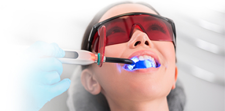

Что такое лазерная стоматология
Лазерная стоматология – это, пожалуй, самое современное ответвление, которое предлагает хирургическая стоматология.
Технология лазерной стоматологии позволяет обрабатывать зубы за то же время, что и бором. Но, в отличие от пугающей бормашины, лечение зубов лазером проходит почти незаметно для пациента. И что еще важнее, при применении лазера нет риска появления микротрещин или заражения.
Область применения лазера широка – работа на мягких тканях, использование при лечении заболеваний пародонта, при хирургических манипуляциях (в том числе при имплантации зубов). Эффективно лазер применяется в эндодонтии (стерилизация каналов) и в эстетической стоматологии (отбеливание зубов).
Принцип работы
За счет нагрева поверхности зуба, из него удаляется большая часть жидкости. После этого, освобождается «защищенное» воспаленное пространство. Луч лазера выжигает все вредоносные микроорганизмы и освобождает пространство для дальнейшей механической чистки.
Лечение кисты зуба лазером проводится аналогично любым другим операциям. Киста – это образование с плотными, твердыми стенками, внутри которых находится большое количество бактерий или мертвой ткани. Внешне она может быть незаметна, но в повседневной жизни причиняет большой дискомфорт. В частности, раньше киста зуба лечилась с большими усилиями.
Этот гнойный мешок образовывается в корнях, поэтому для его удаления, в любом случае, понадобилось бы убирать зуб, вычищать гнойник и на его место устанавливать имплант. Существует еще один метод – хирургический, Для его осуществления в нужном месте десны делается разрез, соответствующий кисте, стоматолог-хирург с помощью инструментов вытягивает мешок, а после зашивает ткани.
Преимущества
- Бережное воздействие. Лазерный луч, попадающий в воздушно-водную струю, мягко удаляет поврежденные участки. При этом он герметизирует сосуды. Это сокращает риски возникновения кровотечений;
- Высокая точность. Лазерный луч воздействует только на поврежденные ткани. Он не затрагивает здоровые участки;
- Безопасность. Во время любых манипуляций сохраняется высокая гигиеничность. В полости не попадают болезнетворные бактерии. Все канавки и бороздки надежно запечатываются;
- Отсутствие боли. В стоматологии с использованием лазера нет места дискомфорту. Пациенты могут обойтись без анестезии, что особенности важно для беременных, детей, людей, страдающих от аллергии;
- Отсутствие швов. Даже при проведении сложных хирургических лазерных операций в стоматологии нет необходимости в швах. Лазер способен запаивать края ран;
- Отсутствие дискомфорта. Лазер не нагревается, не шумит;
- Универсальность. Лазер может применяться для лечения зубов маленьких пациентов, беременных женщин и даже в период кормления грудью.
Недостатки
- Неспособность оперирующего качественно рассмотреть все мелкие детали в области манипуляции. Это связанно с необходимостью надевать специальные защитные очки;
- Высокая вероятность повреждения десны при работе лазера. Дантист, работающий с лазерным оборудованием должен быть очень внимательным и аккуратным;
- Необходимость сочетания бормашины с лазером при пломбировании зуба. Лазер не способен подогнать установленную пломбу по прикусу, и выполнить окончательную ее полировку;
- Высокая стоимость процедуры по сравнению с традиционными методами лечения.
Показания к применению
- Первичные кариозные поражения в удаленной или близкой к пульпе зоне;
- Вторичные кариозные поражения, в которых есть композиты (более мелкие полости или остатки композита) или цементы;
- Кондиционирование поверхности дентина для улучшения адгезии пломб в полостях, которые были препарированы с помощью лазера или вращающегося инструмента;
- Превентивное запечатывание моляров и премоляров, не пораженных кариесом;
- Расширенное запечатывание фиссур после предварительного препарирования кариозных фиссур;
- Сокращение количества микроорганизмов в корневом канале после механической обработки при витальной экстирпации или обработки инфицированного канала.
Противопоказания
- Легочная и сосудистая патология. Это категорическое противопоказание. Если у Вас проблемы с сосудами, то лазер нельзя использовать ни в коем случае;
- Заболевания свертываемости крови, в том числе, варикоз, диабет и другие;
- Индивидуальная непереносимость лазерных методик, высокая чувствительность эмали, склонность к резкому нервному возбуждению.
 Вернуться назад
Вернуться назад
 Разработка и продвижение сайтов
Разработка и продвижение сайтов